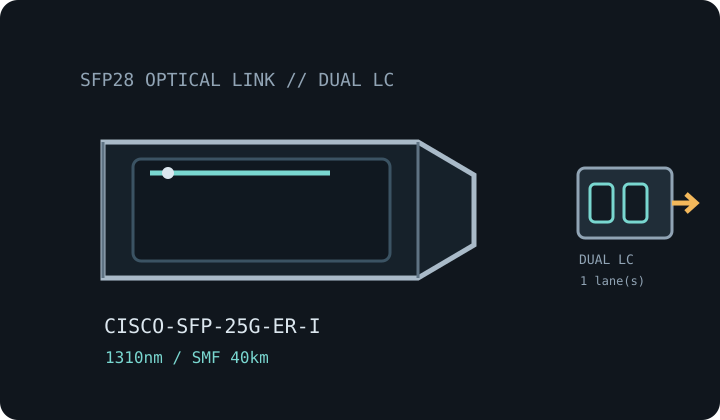

[ MODEL-SPECIFIC OPTICAL NETWORK HARDWARE ]
Cisco SFP-25G-ER-I 25GBASE-ER SFP28 Transceiver
Industrial-temperature 1310nm 25GbE extended-reach SFP28 for single-mode fiber up to 40km. Confirm exact module label and host qualification before installation.

IDENTIFICATION: Match the manufacturer, exact PID/suffix and revision to the current host compatibility listing. Nominal line rate/reach are not measured payload performance.
Model-specific optical specifications
| Dedicated subcategory | SFP transceivers: optical and copper |
|---|---|
| Exact model / ordering SKU | SFP-25G-ER-I |
| Form factor and optical type | SFP28 hot-pluggable optical transceiver; Cisco 25GBASE-ER-I. |
| Ethernet rate | 25Gb/s nominal Ethernet line rate. |
| Wavelength | 1310nm nominal. |
| Fiber medium and reach | G.652 single-mode fiber (SMF), up to 40km per Cisco specification. |
| Connector | Duplex LC. |
| DOM / DDM | Digital optical monitoring (DOM/DDM) supported; diagnostic availability depends on host software. |
| Operating temperature | Industrial operating case temperature: -40°C to 85°C. |
| Host switch/router compatibility caveat | Check Cisco TMG for the exact SFP-25G-ER-I PID, target switch/router model and software release. Confirm the 25GbE port mode and host FEC/link configuration; a supported 25G SFP28 cage alone does not guarantee ER-I qualification. Validate the 40km channel optical budget and dispersion. |
| Variant / deployment caveat | The -I suffix identifies an industrial-temperature variant; do not substitute a commercial LR/SR module based only on connector or SFP28 form factor. |
| Measured performance | No measured specimen throughput is claimed; payload depends on host configuration, far-end module, fiber plant, protocol overhead and test method. |
Host qualification and installation
Check Cisco TMG for the exact SFP-25G-ER-I PID, target switch/router model and software release. Confirm the 25GbE port mode and host FEC/link configuration; a supported 25G SFP28 cage alone does not guarantee ER-I qualification. Validate the 40km channel optical budget and dispersion.
The -I suffix identifies an industrial-temperature variant; do not substitute a commercial LR/SR module based only on connector or SFP28 form factor.
Inspect and clean fiber end faces, retain dust caps during storage, observe ESD precautions and never look into an active optical port. Record the host, port, software release, module label and DOM readings where available.
Manufacturer sources
- Cisco 25GBASE SFP28 Modules Data SheetCisco 25GBASE SFP28 Modules Data Sheet and model-specific 25G Industrial Temperature ER Transceiver product brief.
- Cisco product-specific optical module documentationManufacturer model/specification source for the exact module variant or its product family.
- Cisco Transceiver Module Group (TMG) compatibility matrixVerify exact transceiver PID against supported host platforms and software releases.
- IEEE 802.3 Ethernet standards familyEthernet PHY and signaling context; vendor-specific module qualifications still apply.
Check current documentation revisions and exact PID before deployment.